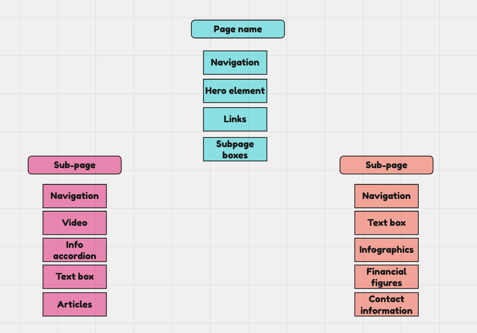
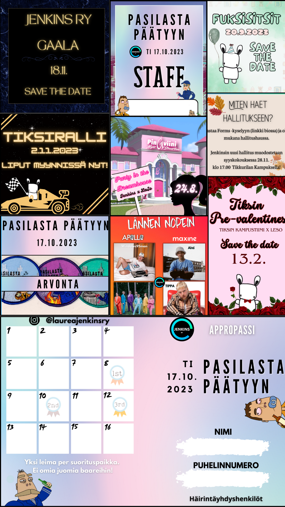
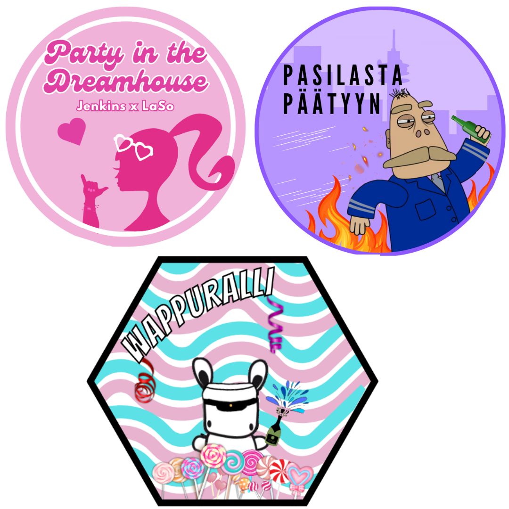
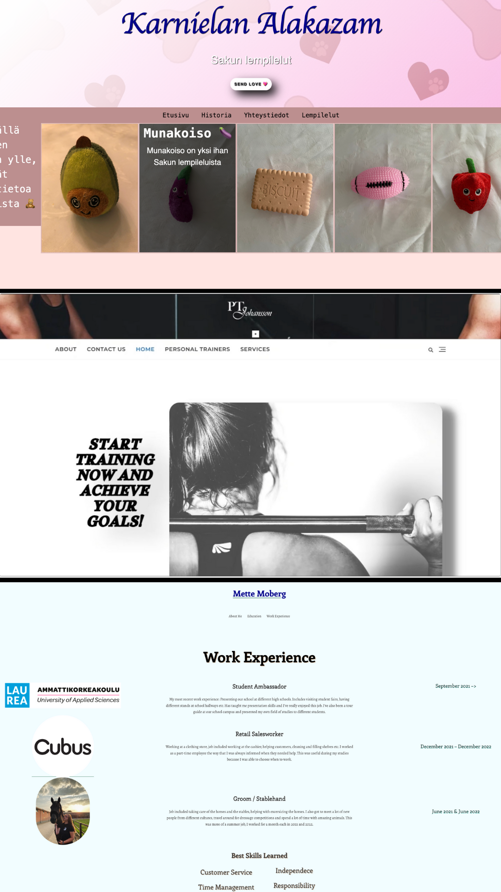

I've done UI / UX design related work during my studies and then also been part of a website creation process during my internship.
UI Design project for HSL (Helsingin Seudun Liikenne) (only in Finnish unfortunately)
We saw issues with the HSL app & website and decided to take on the project on finding more user friendly solutions for them. We interviewed different aged students and tried to make alternative solutions for the website and app to make them work more like the people would prefer.
Information Architecture
During my internship, I did IA for a few pages on the company's new website. I did the IA while following the wireframes of other pages and user stories.

This is a prototype of the information architecture I made for the page as I can't use the official one. This is made with Miro.
Social Media & Web Design
I've been working voluntarily for a few student organizations, mainly keeping up the social media channels.
Some of my work that I've done:
(On the left are some social media posts & on the right some patches for student events.)


Website's I've created:

These are created with either HTML & CSS or WordPress. All of them are school projects. This portfolio is also created with HTML & CSS, fully made by me.
I've also been part of creating a website for a company, using Contentful & Drupal.